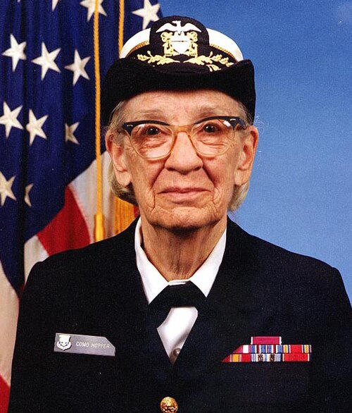
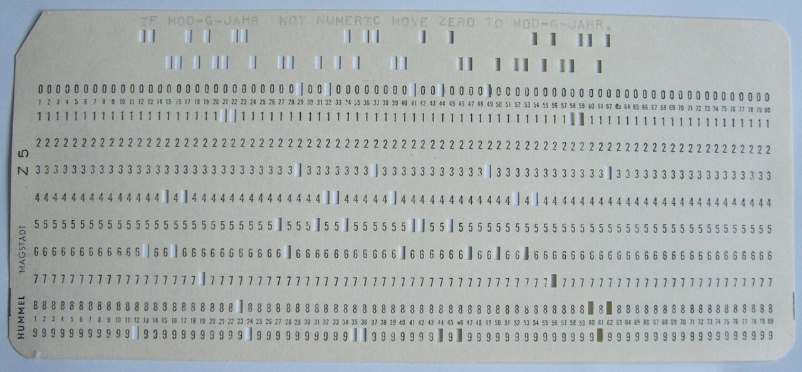

By the end of this lesson, students will be able to:
Divide the class into pairs. One student is the "Programmer" and the other is the "Computer."
Project an image of a COBOL punch card. Ask students to identify English words (e.g., IDENTIFICATION DIVISION, PROCEDURE).
Before Grace Hopper, programming a computer was a task for mathematicians and engineers who spoke the machine's "native tongue"—long strings of numbers and binary switches. Hopper, a mathematician and Rear Admiral in the U.S. Navy, believed that computers could be much more powerful if they were easier to talk to. Her vision was simple but radical: humans should be able to write code in a language that looks like English, and the computer should be smart enough to translate it into its own language.

In 1952, she created the A-0 System, the world's first compiler. While many in the industry told her that computers "didn't understand English," Hopper persisted. She later became a driving force behind COBOL (Common Business-Oriented Language), which allowed programs to run on different types of hardware for the first time. This "machine independence" changed the world, allowing software to outlive the specific machines it was written for.
"The most dangerous phrase in the language is, 'We've always done it this way.'" — Grace Hopper
Beyond her technical achievements, Hopper is famously remembered for "debugging." In 1947, her team found a moth trapped in a relay of the Harvard Mark II computer. She taped the insect into the logbook, noting it was the "first actual case of bug being found." While the term "bug" existed before, her literal interpretation cemented it in the computing lexicon forever.
